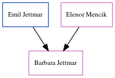

Leonard Spratt 1877 - 1935
[ Home ] | [ Calendar ] | [ Surnames Index ] | [ Census Index ] | [ Family History ]The child of John Spratt and Sophia Dale, Leonard Spratt, the great-uncle of Nigel Horne, was born in St Nicholas-at-Wade, Kent, England on Sep 9, 18771,2,3,4,5,6,7, was baptized there on Oct 21, 1877 and married Rose Dennett (with whom he had 6 children: Leonard Muskett S, Lewis George, Reginald John, Phyllis Rose, Joyce Catherine and Ronald Ernest) in Thanet, Kent, England around Aug 19069. Like his father, he was an agricultural laborer.
During his life, he was living at The Street in St Nicholas-at-Wade on Apr 3, 188110; at Shuart Cottage, Podden Street in St Nicholas-at-Wade on Apr 5, 189111; at 11 Grotto Road, Cliftonville, Kent on Apr 2, 191112; and at Upper Grove, Margate, Kent on Jun 19, 19214. He served in the navy from Apr 24, 1899 to Aug 11, 1919 (Royal Navy: Service number: 291903) He served in the navy from Apr 24, 1899 to Aug 11, 1919 (Royal Navy: Service number: 291903)In 1921 he was working at Margate Gas Work on Addington Street, Margate, Kent, England.
He died on Feb 3, 1935 in Thanet6,8.
Parents
- John was born on Mar 26, 1852
- Sophia was born on Nov 15, 1853
Children
- Leonard Muskett S was born c. May 1906
- Lewis George was born on Sep 13, 1907
- Reginald John was born on Apr 17, 1911
- Phyllis Rose was born on Aug 12, 1912
- Joyce Catherine was born on Apr 6, 1915
- Ronald Ernest was born on Apr 14, 1919
Citations
- 1881 England Census Online publication - Provo, UT, USA: The Generations Network, Inc., 2004. 1881 British Isles Census Index provided by The Church of Jesus Christ of Latter-day Saints © Copyright 1999 Intellectual Reserve, Inc. All rights reserved. All use is subject to the
- 1891 England Census Online publication - Provo, UT, USA: The Generations Network, Inc., 2005.Original data - Census Returns of England and Wales, 1891. Kew, Surrey, England: The National Archives of the UK (TNA): Public Record Office (PRO), 1891. Data imaged from The National
- 1911 England Census Online publication - Provo, UT, USA: Ancestry.com Operations, Inc., 2011.Original data - Census Returns of England and Wales, 1911. Kew, Surrey, England: The National Archives of the UK (TNA), 1911. Data imaged from the National Archives, London, England.
- 1921 Census Of England & Wales - Findmypast (was age 43 and the head of the household)
- British Royal Navy Seamen 1899-1924 - Findmypast
- England & Wales, Death Index: 1984-2005 Online publication - Provo, UT, USA: The Generations Network, Inc., 2007.Original data - General Register Office. England and Wales Civil Registration Indexes. London, England: General Register Office. © Crown copyright. Published by permission of the Cont
- England & Wales, FreeBMD Birth Index, 1837-1915 Online publication - Provo, UT, USA: The Generations Network, Inc., 2006.Original data - General Register Office. England and Wales Civil Registration Indexes. London, England: General Register Office. © Crown copyright. Published by permission of the Cont
- England & Wales deaths 1837-2007 - Findmypast
- England & Wales, FreeBMD Marriage Index: 1837-1915 Online publication - Provo, UT, USA: The Generations Network, Inc., 2006.Original data - General Register Office. England and Wales Civil Registration Indexes. London, England: General Register Office. © Crown copyright. Published by permission of the Cont
- 1881 England, Wales & Scotland Census - Findmypast (was age 3 and the son of the head of the household)
- 1891 England, Wales & Scotland Census - Findmypast (was age 13 and the son of the head of the household)
- 1911 Census for England & Wales - Findmypast (was age 33 and the head of the household)
Media
Leonard Spratt - Naval Record

1911 Census for England & Wales - GBC/1911/RG14/04496/0591/1
England & Wales births 1837-2006 - BMD/B/1877/4/AZ/000533/039
England & Wales marriages 1837-2008 - BMD/M/1906/3/AZ/000381/198
England & Wales deaths 1837-2007 - BMD/D/1935/1/AZ/000964/065
British Royal Navy Seamen 1899-1924 Transcription - GBM-ADM188-41267
1921 Census Of England & Wales - GBC/1921/RG15/04446/1189/04
Family Tree
Generated by ged2site. Last updated on Jun 11, 2024